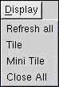

Refresh All: Normally all spectrum windows will be periodically updated based on the setting under "Refresh Rate". However, this menu causes an immediate update of all windows. Note that individual windows can also be updated from the right-click context menu of each spectrum window.
Tile: Causes the spectrum windows to be enlarged to fill up the screen. If some spectrum windows have already been closed (by clicking the close widow button) the remaining windows will be tiled. (To restore windows that have been closed, click one of the Screen Selector buttons). Note that after Tiling the windows, it is not possible to make the windows smaller. They can be made bigger by dragging the bottom-right corner of the window. To have smaller windows, use the Mini Tile function.
Mini Tile: The spectrum windows will be brought to the minimum size. When there are 12 windows on a screen, Mini Tile and Tile will behave identically. Mini tiled windows can be re-sized to be made bigger.
Close All: Closes all the spectrum windows.